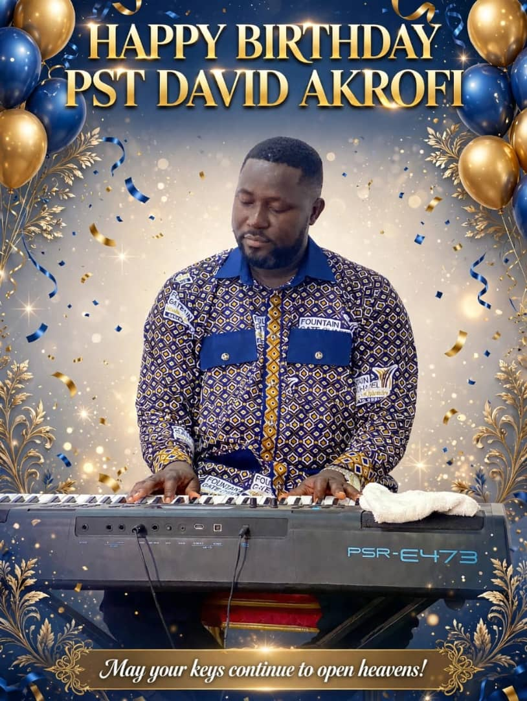

Fresh grace
May God renew your strength and fill you with fresh fire for every assignment.
A DAY OF HONOUR & GRATITUDE
Celebrating a life that blesses others, a heart that serves, and a vessel in God's hands.

“May he give you the desire of your heart and make all your plans succeed.”
PSALM 20:4THE MOMENTS THAT MATTER
Faith in action. Joy in service. A blessing to everyone whose life you touch.
May your life continue to be a living testimony of God's goodness.
WITH LOVE & PRAYERSA PERSONAL BIRTHDAY MESSAGE
OUR PRAYER FOR YOUR NEW YEAR
May God renew your strength and fill you with fresh fire for every assignment.
May doors of opportunity, favour, and divine purpose open before you.
May your days be filled with peace, strength, laughter, and lasting wellness.
May your ministry flourish and your life continue to inspire generations.
A NEW YEAR. NEW TESTIMONIES.
Happy Birthday, Pastor David Akrofi.
May God's goodness follow you all the days of your life.
With love, prayers & heartfelt appreciation ♥
A BLESSING JUST FOR YOU
May the Lord go before you, walk beside you, and strengthen you for every good work. Your next chapter will be filled with grace upon grace.